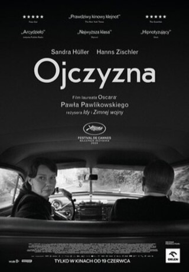

Fatherland
From the festival
Play Trailer Polish filmmaker Pawel Pawlikowski (MVFF41 Tribute) continues his ongoing examination of the emotional wounds and ruins of postwar Europe with this indelible drama. Joining the poetic ranks of his Oscar®-winning Ida (2013) and Oscar-nominated Cold War (MVFF41) in an unofficial trilogy, his latest black-and-white elegy traces the relationship between renowned writer Thomas Mann (Hanns Zischler) and his accomplished actress-writer daughter Erika (Sandra Hüller, among the finest performers working today), across a lyrical journey in a fractured Germany of 1949 where the exiled Mann is to receive the Goethe Prize. It’s the height of the Cold War, and the land that carries the duo’s roots is both deeply divided and consumed by unspoken guilt. A reflective and unforgettable study of identity, family, and national memory, Fatherland is simply a stunner in effortlessly braiding the makings of a classical road movie with an artistic statement on generational remorse. —Tomris Laffly
- Directed by
- Paweł Pawlikowski
- Country
- Poland / Germany / Italy / France
- Year
- 2026
- Running time
- 82 minutes
- Language
- German, English
- Premiere
- Bay Area Premiere
- With
- Anna Madeley, August Diehl, Devid Striesow, Hanns Zischler, Sandra Hüller
Source: Festival website programme (MVFF49): Wayback Machine copy; Festival film page: Wayback Machine copy; Poster from Wikipedia